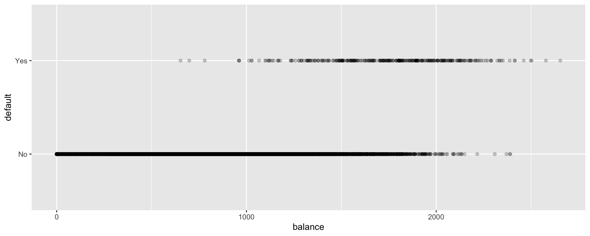
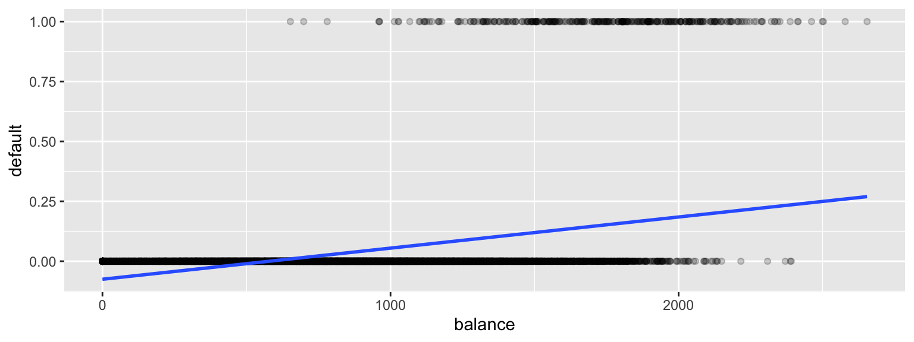
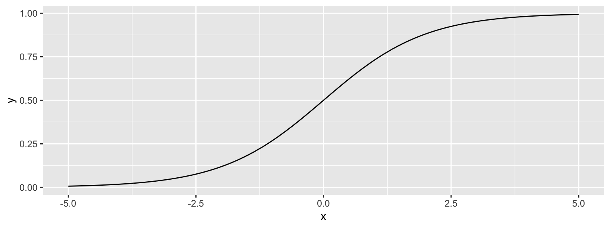
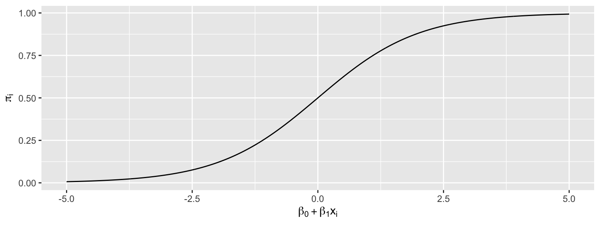
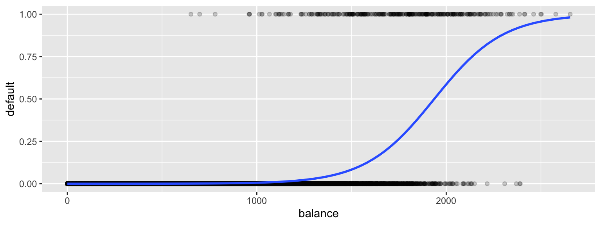
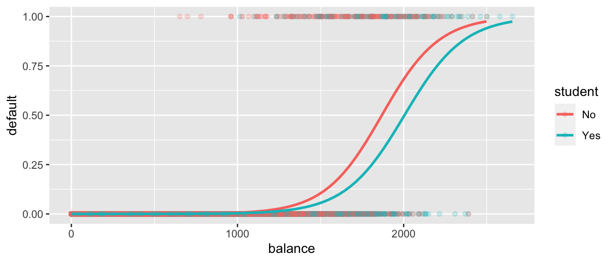
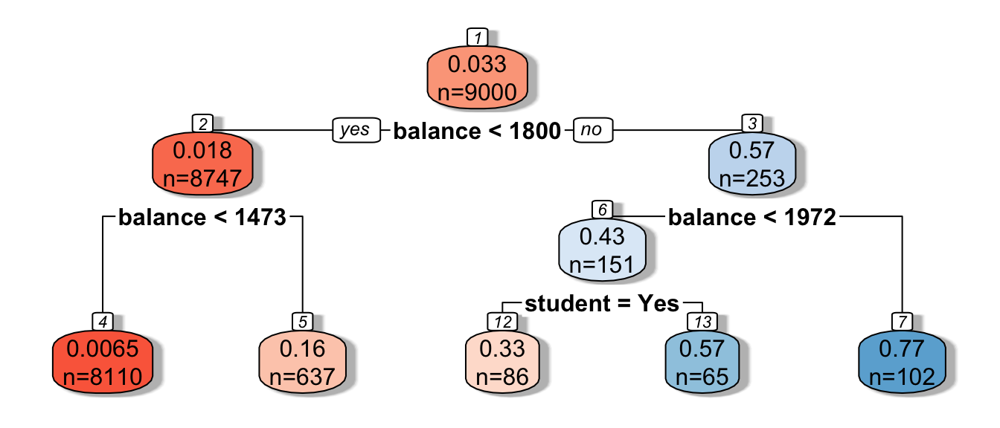
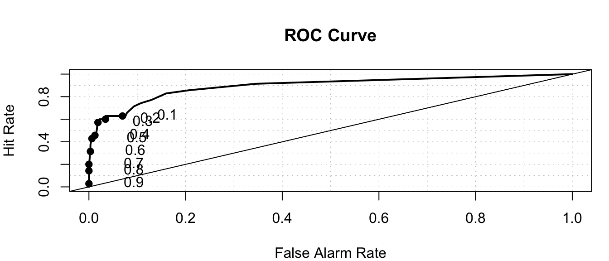
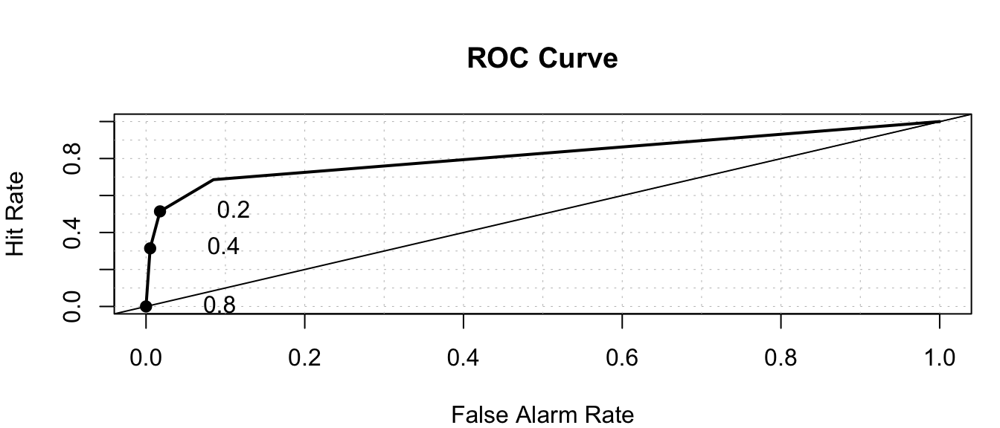
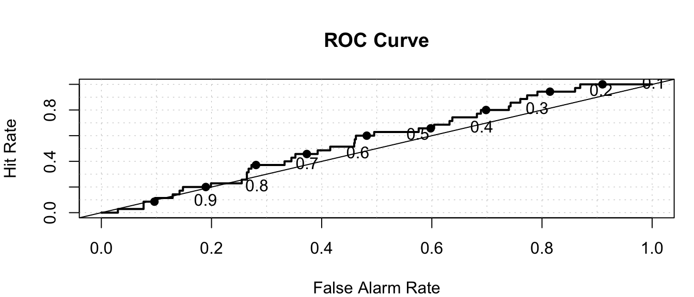

Chapter 8 Logistic Regression and Classification
Learning Outcomes:
Define and distinguish between probability, odds, and odds ratio.
Identify situations where it is appropriate to use logistic regression.
Estimate probabilities, odds, and odds ratios using logistic regression.
Interpret coefficients in a logistic regression model.
Explain how probability estimates are obtained from decision trees and random forests.
Construct and interpret a confusion matrix, given probability estimates and true results.
Define specificity and sensitivity, and calculate them for given data.
Explain the information contained in a receiver operating characteristic (ROC) curve.
Construct receiver operating curves for small sets of data.
Compare classifiers using misclassification rate, and AUC.
8.1 Logistic Regression
8.1.1 Modeling Binary Response
So far, we have modeled only quantitative response variables. The normal error regression model makes the assumption that the response variable is normally distributed, given the value(s) of the explanatory variables.
Now, we’ll look at how to model a categorical response variable. We’ll consider only situations where the response is binary (i.e. has 2 categories). Problems with categorical response variables are sometimes called classification problems, while problems with numeric response variables are sometimes called regression problems.
8.1.2 Credit Card Dataset
We’ll consider a dataset pertaining to 10,000 credit cards. The goal is to predict whether or not the user will default on the payment, using information on the credit card balance, user’s annual income, and whether or not the user is a student. Data come from Introduction to Statistical Learning by James, Witten, Hastie, Tibshirani.
## default student balance income
## No :9667 No :7056 Min. : 0.0 Min. : 772
## Yes: 333 Yes:2944 1st Qu.: 481.7 1st Qu.:21340
## Median : 823.6 Median :34553
## Mean : 835.4 Mean :33517
## 3rd Qu.:1166.3 3rd Qu.:43808
## Max. :2654.3 Max. :73554Default and Balance
The plot displays each person’s credit card balance on the x-axis, and whether or not they defaulted (a 0 or 1) on the y-axis.
 We see that defaults are rare when the balance is less than $1,000, and more common for balances above $2,000.
We’ll first try fitting a linear regression model to the data to try to estimate the probability of a person defaulting on a loan, using the size of their balance as the explanatory variable.
ggplot(data=Default, aes(y=default, x= balance)) + geom_point(alpha=0.2) + stat_smooth(method="lm", se=FALSE)
There are a lot of problems with this model!
It allows the estimated probability of of default to be negative. It also assumes a linear trend that doesn’t seem to fit the data very well.
A sigmoidal curve, like the one below, seems like a better model for default probabilities. This curve stays between 0 and 1, and its curved nature seems like a better fit for the data.
ggplot(data=Default, aes(y=default, x= balance)) + geom_point(alpha=0.2) +
stat_smooth(method="glm", se=FALSE, method.args = list(family=binomial)) 
8.1.3 Logistic Regression Model
A logistic regression model uses a sigmoidal curve like the one we saw to model default probabilities, using balance as an explanatory variable.
The model makes use of the function
\[ f(x) = \frac{e^x}{1+x^x}, \]
whose graph is shown below. This function is called an inverse logit function.

Starting with our linear model \(E(Y_i) = \beta_0+\beta_1x_{i1}\), we need to transform \(\beta_0+\beta_1x_{i1}\) into (0,1).
Let \(\pi_i = \frac{e^{\beta_0+\beta_1x_{i1} }}{1+e^{\beta_0+\beta_1x_{i1}}}\).
Then \(0 \leq \pi_i \leq 1\), and \(\pi_i\) represents an estimate of \(P(Y_i=1)\).
This function maps the values of \(\beta_0+\beta_1x_{i1}\) into the interval (0,1).

The logistic regression model assumes that:
* \(Y_i \in \{0,1\}\)
* \(E(Y_i) = P(Y_i=1) = \pi_i=\frac{e^{\beta_0+\beta_1x_{i1} + \ldots \beta_px_{ip}}}{1+e^{\beta_0+\beta_1x_{i1} + \ldots \beta_px_{ip}}}\)
i.e. \(\beta_0+\beta_1x_{i1} + \ldots \beta_px_{ip}= \text{log}\left(\frac{\pi_i}{1-\pi_i}\right).\) (This is called the logit function and can be written \(\text{logit}(\pi_i)\).
Instead of assuming that the expected response is a linear function of the explanatory variables, we are assuming that it is a function of a linear function of the explanatory variables.
8.1.4 Logistic Regression Model for Default
ggplot(data=Default, aes(y=default, x= balance)) + geom_point(alpha=0.2) +
stat_smooth(method="glm", se=FALSE, method.args = list(family=binomial)) 
To fit the logistic regression model in R, we use the function glm, instead of lm. The function is specified the same way as before, and we add family = binomial(link = "logit").
CCDefault_M <- glm(data=Default, default ~ balance, family = binomial(link = "logit"))
summary(CCDefault_M)##
## Call:
## glm(formula = default ~ balance, family = binomial(link = "logit"),
## data = Default)
##
## Deviance Residuals:
## Min 1Q Median 3Q Max
## -2.2697 -0.1465 -0.0589 -0.0221 3.7589
##
## Coefficients:
## Estimate Std. Error z value Pr(>|z|)
## (Intercept) -10.6513306 0.3611574 -29.49 <0.0000000000000002 ***
## balance 0.0054989 0.0002204 24.95 <0.0000000000000002 ***
## ---
## Signif. codes: 0 '***' 0.001 '**' 0.01 '*' 0.05 '.' 0.1 ' ' 1
##
## (Dispersion parameter for binomial family taken to be 1)
##
## Null deviance: 2920.6 on 9999 degrees of freedom
## Residual deviance: 1596.5 on 9998 degrees of freedom
## AIC: 1600.5
##
## Number of Fisher Scoring iterations: 8The regression equation is:
\[ P(\text{Default}) = \hat{\pi}_i = \frac{e^{-10.65+0.0055\times\text{balance}}}{1+e^{-10.65+0.0055\times\text{balance}}} \]
Predictions
For a $1,000 balance, the estimated default probability is \(\frac{e^{-10.65+0.0055(1000) }}{1+e^{-10.65+0.0055(1000)}} \approx 0.006\)
For a $1,500 balance, the estimated default probability is \(\frac{e^{-10.65+0.0055(1500) }}{1+e^{-10.65+0.0055(1500)}} \approx 0.08\)
For a $2,000 balance, the estimated default probability is \(\frac{e^{-10.65+0.0055(2000) }}{1+e^{-10.65+0.0055(2000)}} \approx 0.59\)
We confirm these, using the predict command in R.
## 1
## 0.005752145## 1
## 0.08294762## 1
## 0.58576948.1.5 Where do the b’s come from?
Recall that for a quantitative response variable, the values of \(b_1, b_2, \ldots, b_p\) are chosen in a way that minimizes \(\displaystyle\sum_{i=1}^n \left(y_i-(\beta_0+\beta_1x_{i1}+\ldots+\beta_px_{ip})^2\right)\).
Least squares does not work well in this generalized setting. Instead, the b’s are calculated using a more advanced technique, known as maximum likelihood estimation.
8.1.6 Odds and Odds Ratio
For an event with probability \(p\), the odds of the event occurring are \(\frac{p}{1-p}\).
Examples: 1. The odds of a fair coin landing heads are \(\frac{0.5}{1-0.5}=1\), sometimes written 1:1.
- The odds of a fair 6-sided die landing on a 1 are \(\frac{1/6}{1-1/6}=\frac{1}{5}\), sometimes written 1:5.
In the credit card example, the odds of default are:
For a $1,000 balance - odds of default are \(\frac{0.005752145}{1-0.005752145} \approx 1:173.\)
For a $1,500 balance - odds of default are \(\frac{0.08294762 }{1-0.08294762 } \approx 1:11.\)
For a $2,000 balance - odds of default are \(\frac{0.5857694}{1-0.5857694} \approx 1.414:1.\)
The quantity \(\frac{\frac{\pi_i}{1-\pi_i}}{\frac{\pi_j}{1-\pi_j}}\) is called the odds ratio and represents the odds ratio of a default for user \(i\), compared to user \(j\).
Example:
The default odds ratio for a $1,000 payment, compared to a $2,000 payment is
The odds ratio is \(\frac{\frac{1}{173}}{\frac{1.414}{1}}\approx 1:244.\)
The odds of a default are about 244 times larger for a $2,000 payment than a $1,000 payment.
8.1.7 Interpretation of \(\beta_1\)
Consider the odds ratio for a case \(j\) with explanatory variable \(x + 1\), compared to case \(i\) with explanatory variable \(x\).
That is \(\text{log}\left(\frac{\pi_i}{1-\pi_i}\right) = \beta_0+\beta_1x\), and \(\text{log}\left(\frac{\pi_j}{1-\pi_j}\right) = \beta_0+\beta_1(x+1)\).
\(\text{log}\left(\frac{\frac{\pi_j}{1-\pi_j}}{\frac{\pi_i}{1-\pi_i}}\right)=\text{log}\left(\frac{\pi_j}{1-\pi_j}\right)-\text{log}\left(\frac{\pi_i}{1-\pi_i}\right)=\beta_0+\beta_1(x+1)-(\beta_0+\beta_1(x))=\beta_1.\)
For every 1-unit increase in \(x\) we expect the log odds of “success” to multiply by a factor of \(\beta_1\).
For every 1-unit increase in \(x\) we expect the odds of “success” to multiply by a factor of \(e^{\beta_1}\).
Interpretation in Credit Card Example
\(b_1=0.0055\)
For each 1-dollar increase in balance on the credit card., the odds of default are estimated to multiply by \(e^{0.0055}\approx1.0055\).
That is, for each additional dollar on the card balance, the odds of default are estimated to increase by 0.55%
For each increase of \(d\) dollars in credit card balance, odds of default are estimated to multiply by a factor of \(e^{0.0055d}\).
For every $1,000 increase in balance, the odds of default are expected to multiply by a factor of \(e^{0.0055\times 1000}\approx 244\).
Thus, the odds of default for a balance of $2,000 are estimated to be \(e^{0.0055\times 1000}\approx 244\) times as great as the odds of default for a $1,000 balance. This matches our result when we actually calculated out the probabilities and odds.
8.1.8 Hypothesis Tests in Logistic Regression
The p-value on the “balance” line of the regression output is associated with the null hypothesis \(\beta_1=0\), that is that there is no relationship between balance and the odds of defaulting on the payment.
The fact that the p-value is so small tells us that there is strong evidence of a relationship between balance and odds of default.
8.1.9 Confidence Intervals for \(\beta_1\)
## 2.5 % 97.5 %
## (Intercept) -11.383288936 -9.966565064
## balance 0.005078926 0.005943365We are 95% confident that for each 1 dollar increase in credit card balance, the odds of default are expected to multiply by a factor between \(e^{0.00508}\approx 1.0051\) and \(e^{0.00594}\approx 1.0060\).
This is a profile-likelihood interval, which you can read more about here.
8.2 Multiple Logistic Regression
8.2.1 Logistic Regression Models with Multiple Explanatory Variables
We can also perform logistic regression in situations where there are multiple explanatory variables. We’ll estimate probability of default, using both balance and whether or not the person is a student (a categorical variable) as explanatory variables.
CCDefault_M2 <- glm(data=Default, default ~ balance + student, family = binomial(link = "logit"))
summary(CCDefault_M2)##
## Call:
## glm(formula = default ~ balance + student, family = binomial(link = "logit"),
## data = Default)
##
## Deviance Residuals:
## Min 1Q Median 3Q Max
## -2.4578 -0.1422 -0.0559 -0.0203 3.7435
##
## Coefficients:
## Estimate Std. Error z value Pr(>|z|)
## (Intercept) -10.7494959 0.3691914 -29.116 < 0.0000000000000002 ***
## balance 0.0057381 0.0002318 24.750 < 0.0000000000000002 ***
## studentYes -0.7148776 0.1475190 -4.846 0.00000126 ***
## ---
## Signif. codes: 0 '***' 0.001 '**' 0.01 '*' 0.05 '.' 0.1 ' ' 1
##
## (Dispersion parameter for binomial family taken to be 1)
##
## Null deviance: 2920.6 on 9999 degrees of freedom
## Residual deviance: 1571.7 on 9997 degrees of freedom
## AIC: 1577.7
##
## Number of Fisher Scoring iterations: 8The following graph gives an illustration of the model.
ggplot(data=Default, aes(y=default, x= balance, color=student)) + geom_point(alpha=0.2) + stat_smooth(method="glm", se=FALSE, method.args = list(family=binomial)) 
8.2.2 Multiple Logistic Regression Interpretations
The regression equation is:
\[ P(\text{Default}) = \hat{\pi}_i = \frac{e^{-10.75+0.005738\times\text{balance}-0.7149\times\text{I}_{\text{student}}}}{1+e^{-10.75+0.005738\times\text{balance}-0.7149\times\text{I}_{\text{student}}}} \]
For each 1 dollar increase in balance, the odds of default are estimated to multiply by a factor \(e^{0.005738}\approx 1.00575\), assuming whether or not the person is a student is held constant. Thus, the estimated odds of default increase by about 0.5%, for each 1-dollar increase in balance..
For every $100 increase in balance, the odds of default are estimated to multiply by \(e^{0.005738\times100}\approx 1.775\), assuming whether or not the person is a student is held constant. Thus, the estimated odds of default increase by about 77.5%.
The odds of default for students are estimated to be \(e^{-0.7149} \approx 0.49\) as high for students as non-students, assuming balance amount is held constant.
8.2.3 Hypothesis Tests in Multiple Logistic Regression Model
There is strong evidence of a relationship between balance and odds of default, after accounting for whether or not the person is a student.
There is evidence that students are less likely to default than nonstudents, provided the balance on the card is the same.
8.2.4 Multiple Logistic Regression Model with Interaction
The previous model assumes the effect of balance on default probability is the same for students as for nonstudents. If we suspect that the effect of having a larger balance might be different for students than for nonstudents, then we could use a model with interaction between the balance and student variables.
CCDefault_M_Int <- glm(data=Default, default ~ balance * student, family = binomial(link = "logit"))
summary(CCDefault_M_Int)##
## Call:
## glm(formula = default ~ balance * student, family = binomial(link = "logit"),
## data = Default)
##
## Deviance Residuals:
## Min 1Q Median 3Q Max
## -2.4839 -0.1415 -0.0553 -0.0202 3.7628
##
## Coefficients:
## Estimate Std. Error z value Pr(>|z|)
## (Intercept) -10.8746818 0.4639679 -23.438 <0.0000000000000002 ***
## balance 0.0058188 0.0002937 19.812 <0.0000000000000002 ***
## studentYes -0.3512310 0.8037333 -0.437 0.662
## balance:studentYes -0.0002196 0.0004781 -0.459 0.646
## ---
## Signif. codes: 0 '***' 0.001 '**' 0.01 '*' 0.05 '.' 0.1 ' ' 1
##
## (Dispersion parameter for binomial family taken to be 1)
##
## Null deviance: 2920.6 on 9999 degrees of freedom
## Residual deviance: 1571.5 on 9996 degrees of freedom
## AIC: 1579.5
##
## Number of Fisher Scoring iterations: 88.2.5 Interpretations for Logistic Model with Interaction
- The regression equation is:
\[ P(\text{Default}) = \hat{\pi}_i = \frac{e^{-10.87+0.0058\times\text{balance}-0.35\times\text{I}_{\text{student}}-0.0002\times\text{balance}\times{\text{I}_{\text{student}}}}}{1+e^{-10.87+0.0058\times\text{balance}-0.35\times\text{I}_{\text{student}}-0.0002\times\text{balance}\times{\text{I}_{\text{student}}}}} \]
Equation for Students
\[ P(\text{Default}) = \hat{\pi}_i = \frac{e^{-10.52+0.0056\times\text{balance}}}{1+e^{-10.52+0.0056\times\text{balance}}} \]
Assuming a person is a student, for every $100 increase in balance, the odds of default are expected to multiply by a factor of \(e^{0.0056\times 100}=1.75\), a 75% increase.
Equation for Non-Students
\[ P(\text{Default}) = \hat{\pi}_i = \frac{e^{-10.87+0.0058\times\text{balance}}}{1+e^{-10.87+0.0058\times\text{balance}}} \]
Assuming a person is a student, for every $100 increase in balance, the odds of default are expected to multiply by a factor of \(e^{0.0058\times 100}=1.786\), a 78.6% increase.
- Since estimate of the interaction effect is so small and the p-value on this estimate is large, it is plausible that there is no interaction at all. Thus, the simpler non-interaction model is preferable.
8.2.6 Logistic Regression Key Points
\(Y\) is a binary response variable.
\(\pi_i\) is a function of explanatory variables \(x_{i1}, \ldots x_{ip}\).
\(E(Y_i) = \pi_i = \frac{e^{\beta_0+\beta_1x_i + \ldots\beta_px_{ip}}}{1+e^{\beta_0+\beta_1x_i + \ldots\beta_px_{ip}}}\)
\(\beta_0+\beta_1x_i + \ldots\beta_px_{ip} = \text{log}\left(\frac{\pi_i}{1-\pi_i}\right)\)
For quantitative \(x_j\), when all other explanatory variables are held constant, the odds of “success” multiply be a factor of \(e^{\beta_j}\) for each 1 unit increase in \(x_j\)
For categorical \(x_j\), when all other explanatory variables are held constant, the odds of “success” are \(e^{\beta_j}\) times higher for category \(j\) than for the “baseline category.”
For models with interaction, we can only interpret \(\beta_j\) when the values of all other explanatory variables are given (since the effect of \(x_j\) depends on the other variables.)
8.3 Assessing a Classifier’s Performance
8.3.1 Measuring Prediction Accuracy
Just as we’ve done for models with quantitative variables, we’ll want to compare and assess the performance of models for predicting categorical responses. This might involve comparing llogistic regression models with different explanatory variables, or comparing a regression model to another technique such as a decision tree.
Just as we did before, we’ll divide the data so that we can evaluate predictions on a subset of the data that was not used to fit the model.
We’ll divide the credit card dataset into a set of 9,000 observations, on which we’ll fit our models and assess predictions on the remaining 1,000.
set.seed(08172022)
samp <- sample(1:nrow(Default), 1000)
Default_Test <- Default[samp, ]
Default_Train <- Default[-samp, ]We fit the model with interaction to the training data:
LR_Default_M_Int <- glm(data=Default_Train, default ~ balance * student, family = binomial(link = "logit"))
summary(LR_Default_M_Int)##
## Call:
## glm(formula = default ~ balance * student, family = binomial(link = "logit"),
## data = Default_Train)
##
## Deviance Residuals:
## Min 1Q Median 3Q Max
## -2.5610 -0.1373 -0.0515 -0.0180 3.8242
##
## Coefficients:
## Estimate Std. Error z value Pr(>|z|)
## (Intercept) -11.2714061 0.5188284 -21.725 <0.0000000000000002 ***
## balance 0.0060696 0.0003273 18.547 <0.0000000000000002 ***
## studentYes 0.0924588 0.8606304 0.107 0.914
## balance:studentYes -0.0004749 0.0005142 -0.924 0.356
## ---
## Signif. codes: 0 '***' 0.001 '**' 0.01 '*' 0.05 '.' 0.1 ' ' 1
##
## (Dispersion parameter for binomial family taken to be 1)
##
## Null deviance: 2617.1 on 8999 degrees of freedom
## Residual deviance: 1385.5 on 8996 degrees of freedom
## AIC: 1393.5
##
## Number of Fisher Scoring iterations: 8We then use the model to estimate the probability of a person defaulting on their credit card payment.
Information about 10 different credit card users, as well as the logistic regression estimate of their probability of default are shown below. The table also shows whether or not the user really defaulted on their payment.
LR_Prob <- predict(LR_Default_M_Int, newdata=Default_Test, type="response") %>% round(2)
Actual_Default <- factor(ifelse(Default_Test$default==1, "Yes", "No"))
student <- Default_Test$student
balance <- Default_Test$balance
LR_Res_df <- data.frame(student, balance, LR_Prob, Actual_Default)
kable(head(LR_Res_df, 50)%>% arrange(desc(LR_Prob)) %>% head(10))| student | balance | LR_Prob | Actual_Default | |
|---|---|---|---|---|
| 2465 | Yes | 2026.864 | 0.54 | No |
| 1228 | No | 1682.201 | 0.26 | No |
| 6656 | No | 1551.028 | 0.14 | No |
| 1185 | No | 1541.813 | 0.13 | No |
| 9963 | Yes | 1635.175 | 0.12 | No |
| 6635 | No | 1434.128 | 0.07 | Yes |
| 9691 | No | 1391.318 | 0.06 | No |
| 5921 | Yes | 1513.542 | 0.06 | No |
| 9755 | No | 1233.619 | 0.02 | No |
| 7569 | Yes | 1294.286 | 0.02 | No |
8.3.2 Decision Tree Classifier
For comparison, let’s use a decision tree to predict whether a person will default.
In a binary classification problem, we can treat a default as \(y=1\) and non-default as \(y=0\), and grow the tree as we would in regression.
The mean response in a node \(\bar{Y}\), which is equivalent to the proportion of people in the node who defaulted, can be interpreted as the probability of default.
The first few splits of the tree are shown.
library(rpart)
library(rpart.plot)
# grow shorter tree for illustration
tree <- rpart(data=Default_Train, default~balance + student, cp=0.005)
rpart.plot(tree, box.palette="RdBu", shadow.col="gray", nn=TRUE, cex=1, extra=1)
We add the decision tree probabilities to the table seen previously.
LR_Res_df <- data.frame(student, balance, LR_Prob, Tree_Prob, Actual_Default)
kable(head(LR_Res_df, 50)%>% arrange(desc(LR_Prob)) %>% head(10))| student | balance | LR_Prob | Tree_Prob | Actual_Default | |
|---|---|---|---|---|---|
| 2465 | Yes | 2026.864 | 0.54 | 0.77 | No |
| 1228 | No | 1682.201 | 0.26 | 0.16 | No |
| 6656 | No | 1551.028 | 0.14 | 0.16 | No |
| 1185 | No | 1541.813 | 0.13 | 0.16 | No |
| 9963 | Yes | 1635.175 | 0.12 | 0.16 | No |
| 6635 | No | 1434.128 | 0.07 | 0.01 | Yes |
| 9691 | No | 1391.318 | 0.06 | 0.01 | No |
| 5921 | Yes | 1513.542 | 0.06 | 0.16 | No |
| 9755 | No | 1233.619 | 0.02 | 0.01 | No |
| 7569 | Yes | 1294.286 | 0.02 | 0.01 | No |
We see that the tree estimates that the first person has a 0.77 probability of defaulting on the payment, compared to an estimate of 0.54, given by the logistic regression model. On the other hand, the tree estimates only a 0.16 probability of the second person defaulting, compared to 0.26 for the logistic regression model.
8.3.3 Assessing Classifier Accuracy
We’ve seen \(\text{RMSPE} = \sqrt{\displaystyle\sum_{i=1}^{n}{(\hat{y}_i-y_i)^2}}\) used as a measure of predictive accuracy in a regression problem.
Since our outcome is not numeric, this is not a good measure of predictive accuracy in a classification problem. We’ll examine some alternatives we can use instead.
Classification Accuracy
One simple approach is calculate the proportion of credit card users classified correctly. If a person has model estimates a predicted probability of default greater than 0.5, the person is predicted to default, while if the probability estimate is less than 0.5, the person is predicted to not default.
The table shows the prediction for each of the 10 users, using both logistic regression and the decision tree.
LR_Pred <- factor(ifelse(LR_Prob > 0.5, "Yes", "No"))
Tree_Pred <- factor(ifelse(Tree_Prob > 0.5, "Yes", "No"))
LR_Res_df <- data.frame(student, balance, LR_Prob, Tree_Prob, LR_Pred,Tree_Pred, Actual_Default)
kable(head(LR_Res_df, 50)%>% arrange(desc(LR_Prob)) %>% head(10))| student | balance | LR_Prob | Tree_Prob | LR_Pred | Tree_Pred | Actual_Default | |
|---|---|---|---|---|---|---|---|
| 2465 | Yes | 2026.864 | 0.54 | 0.77 | Yes | Yes | No |
| 1228 | No | 1682.201 | 0.26 | 0.16 | No | No | No |
| 6656 | No | 1551.028 | 0.14 | 0.16 | No | No | No |
| 1185 | No | 1541.813 | 0.13 | 0.16 | No | No | No |
| 9963 | Yes | 1635.175 | 0.12 | 0.16 | No | No | No |
| 6635 | No | 1434.128 | 0.07 | 0.01 | No | No | Yes |
| 9691 | No | 1391.318 | 0.06 | 0.01 | No | No | No |
| 5921 | Yes | 1513.542 | 0.06 | 0.16 | No | No | No |
| 9755 | No | 1233.619 | 0.02 | 0.01 | No | No | No |
| 7569 | Yes | 1294.286 | 0.02 | 0.01 | No | No | No |
Notice that although the probabilities differ, the logistic regression model and classification tree give the same predictions for these ten cases. Both correctly predict 8 out of the 10 cases, but mistakenly predict the first person to default, when they didn’t, and mistakenly predict that the sixth person would not default when they did.
We’ll check the classification accuracy for the model and the tree.
## [1] 0.972## [1] 0.971We see that the two techniques are each right approximately 97% of the time.
This may not really be as good as it sounds. Can you think of a very simple classification strategy that would achieve a similarly impressive predictive accuracy on these data?
8.3.4 Confusion Matrix
In addition to assessing overall accuracy, it is sometimes helpful to assess how well models are able to predict outcomes in each class. For example, how accurately can a model detect people who do actually default on their payments?
A confusion matrix is a two-by-two table displaying the number of cases predicted in each category as columns, and the number of cases actually in each category as rows
| Actually Negative | Actually Positive | |
|---|---|---|
| Predicted Negative | # True Negative | # False Negative |
| Predicted Positive | # False Positive | # True Positive |
The confusionMatrix matrix command in R returns the confusion matrix for all 1,000 test cases.
Let’s look at the confusion matrix for all 1,000 test cases. The data argument is the predicted outcome, and the reference argument is the true outcome. The positive argument is the category that we’ll classify as a positive.
Logistic Regression Confusion Matrix
## Confusion Matrix and Statistics
##
## Reference
## Prediction No Yes
## No 957 20
## Yes 8 15
##
## Accuracy : 0.972
## 95% CI : (0.9598, 0.9813)
## No Information Rate : 0.965
## P-Value [Acc > NIR] : 0.12988
##
## Kappa : 0.5035
##
## Mcnemar's Test P-Value : 0.03764
##
## Sensitivity : 0.4286
## Specificity : 0.9917
## Pos Pred Value : 0.6522
## Neg Pred Value : 0.9795
## Prevalence : 0.0350
## Detection Rate : 0.0150
## Detection Prevalence : 0.0230
## Balanced Accuracy : 0.7101
##
## 'Positive' Class : Yes
## Out of 965 people who did not default, the logistic regression model correctly predicted 957 of them.
Out of 35 people that did default, the model correctly predicted 15 of them.
Tree Confusion Matrix
# data is predicted class
# reference is actual class
confusionMatrix( data = Tree_Pred , reference= Actual_Default, "Yes")## Confusion Matrix and Statistics
##
## Reference
## Prediction No Yes
## No 960 24
## Yes 5 11
##
## Accuracy : 0.971
## 95% CI : (0.9586, 0.9805)
## No Information Rate : 0.965
## P-Value [Acc > NIR] : 0.1724819
##
## Kappa : 0.4186
##
## Mcnemar's Test P-Value : 0.0008302
##
## Sensitivity : 0.3143
## Specificity : 0.9948
## Pos Pred Value : 0.6875
## Neg Pred Value : 0.9756
## Prevalence : 0.0350
## Detection Rate : 0.0110
## Detection Prevalence : 0.0160
## Balanced Accuracy : 0.6546
##
## 'Positive' Class : Yes
## Out of 965 people who did not default, the logistic regression model correctly predicted 960 of them.
Out of 35 people that did default, the model correctly predicted 11 of them.
Notice that the tree was less likely to predict a person to default in general, returning only 16 positive predictions, compared to 23 for the logistic regression model.
8.3.5 Sensitivity and Specificity
The sensitivity of a classifier is the proportion of all positive cases that the model correctly identifies as positive. (i.e. probability model says “positive” given actually is positive.)
\[ \text{Sensitivity} = \frac{\text{True Positive}}{\text{True Positive} + \text{False Negative}} = \frac{\text{Correctly Predicted Positives}}{\text{Total Number of Actual Positives}} \]
LR Sensitivity
\[ \frac{15}{15+20} \approx 0.4286 \]
Tree Sensitivity
\[ \frac{11}{11+24} \approx 0.3143 \]
The specificity of a classifier is the proportion of all negative cases that the model correctly identifies as negative (i.e probabiltiy model says “negative” given truly is negative.)
\[ \text{Specificity} = \frac{\text{True Negative}}{\text{True Negative} + \text{False Positive}}= \frac{\text{Correctly Predicted Negatives}}{\text{Total Number of Actual Negatives}} \]
LR Specificity
\[ \frac{957}{957+8} \approx 0.9917 \]
Tree Specificity
\[ \frac{960}{960+5} \approx 0.9948 \]
In a given situation, we should think about the cost of a false negative vs a false positive when determining whether to place more weight on sensitivity or specificity. For example, “is it worse to tell a patient they tested positive for a disease when they really don’t have it, or to not tell them they tested positive when they really do have it?”
8.4 Receiver Operating Characteristic Curve
8.4.1 Separating +’s and -’s
The prediction accuracy, sensitivity, and specificity measures, seen in the previous section are based only on the predicted outcome, without considering the probability estimates themselves. These techniques treat a 0.49 estimated probability of default the same as a 0.01 estimated probability.
We would hope to see more defaults among people with high estimated default probabilities than low ones. To assess this, we can list the people in order from highest to lowest probability estimates and see where the true defaults lie.
For example, consider the following fictional probability estimates produced by two different classifiers (models) for eight credit card users:
Classifier 1
## Classifier1_Probability_Estimate True_Outcome
## 1 0.90 Yes
## 2 0.75 Yes
## 3 0.60 No
## 4 0.40 Yes
## 5 0.30 No
## 6 0.15 No
## 7 0.05 No
## 8 0.01 NoClassifier 2
## Classifier2_Probability_Estimate True_Outcome
## 1 0.80 Yes
## 2 0.70 No
## 3 0.55 No
## 4 0.40 Yes
## 5 0.35 No
## 6 0.15 No
## 7 0.10 Yes
## 8 0.02 NoClassifier 1 is better able to separate the “Yes’s” from “No’s” as the three true “Yes’s” are among the four highest probabilities. Classifier 2 is less able to separate the true “Yes’s” from true “No’s.”
8.4.2 ROC Curve
A receiver operating characteristic (ROC) curve tells us how well a predictor is able to separate positive cases from negative cases.
The blog (Toward Data Science) [https://towardsdatascience.com/applications-of-different-parts-of-an-roc-curve-b534b1aafb68] writes
“Receiver Operating Characteristic (ROC) curve is one of the most common graphical tools to diagnose the ability of a binary classifier, independent of the inherent classification algorithm. The ROC analysis has been used in many fields including medicine, radiology, biometrics, natural hazards forecasting, meteorology, model performance assessment, and other areas for many decades and is increasingly used in machine learning and data mining research [1]. If you are a Data Scientist, you might be using it on a daily basis.”
The ROC curve plots the true positive (or hit) rate against the false positive rate (false alarm) rate, as the cutoff for a positive classification varies.

The higher the curve, the better the predictor is able to separate positive cases from negative ones.
Predictions made totally at random would be expected to yield a diagonal ROC curve.
8.4.3 Constructing ROC Curve
- Order the probabilities from highest to lowest.
- Assume only the case with the highest probability is predicted as a positive.
- Calculate the true positive rate (hit rate) \(\frac{\text{# True Positives}}{\text{# Actual Positives}}\) and false positive (false alarm) \(\frac{\text{# False Positives}}{\text{# Actual Negatives}}\)rate.
- Plot the point \(\left( \frac{\text{# False Positives}}{\text{# Actual Negatives}}, \frac{\text{# True Positives}}{\text{# Actual Positives}} \right)\) in the coordinate plane.
- Now assume the cases with the two highest probabilities are predicted as positives, and repeat steps 3-4.
- Continue, by classifiying one more case as positive in each step.
8.4.4 Construct ROC Example
Let’s practice constructing an ROC curve for a small set of probability estimates.
prob <- c(0.9, 0.8, 0.7, 0.65, 0.45, 0.3, 0.2, 0.15, 0.1, 0.05)
Actual <- c("+", "-", "+", "+", "-", "-", "-", "-", "+", "-")
Hit_Rate <- c("1/4", "1/4", "2/4", "", "", "", "", "", "", "")
FA_Rate <- c("0/6", "1/6", "1/6", "", "", "", "", "", "", "")
kable(data.frame(prob, Actual, Hit_Rate, FA_Rate))| prob | Actual | Hit_Rate | FA_Rate |
|---|---|---|---|
| 0.90 | + | 1/4 | 0/6 |
| 0.80 | - | 1/4 | 1/6 |
| 0.70 | + | 2/4 | 1/6 |
| 0.65 | + | ||
| 0.45 | - | ||
| 0.30 | - | ||
| 0.20 | - | ||
| 0.15 | - | ||
| 0.10 | + | ||
| 0.05 | - |
Finish filling in the table and sketch a graph of the resulting ROC curve.
Question: If the probability estimate of 0.45 were instead 0.5 or 0.55, would this change the ROC curve? Why or why not?
8.4.5 AUC
The area under the ROC curve, (AUC) provides a measure of the model’s predictive strength.
While there is no standard for what constitutes a good" AUC, higher is better, andAUC" is useful for comparing models.
A model that can perfectly separate successes from failures will have an AUC of 1.
A model that assigns probabilities at random is expected to have an AUC of 0.5.
8.4.6 LR and Tree ROC Curves

## Area under the curve: 0.8953
## Area under the curve: 0.8176
## Area under the curve: 0.563Even though a model that assigns predictions randomly, with 97% predicted as negatives will have a high accuracy rate, it will yield a poor ROC curve indicating an inability to separate positive cases from negative ones.